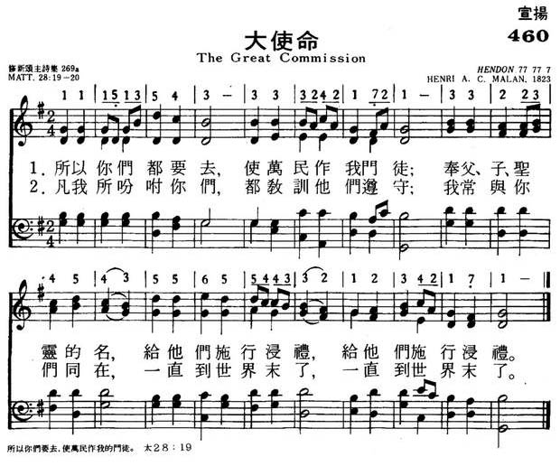

|
|
|
|
Therefore go and make disciples of all nations, baptizing them in the name of the Father and of the Son and of the Holy Spirit, 20 and teaching them to obey everything I have commanded you. And surely I am with you always, to the very end of the age.” Matthew 28:16-20 |
460大使命
1.所以你们都要去，使万民作我门徒；
奉父、子、圣灵的名，给他们施行浸礼， 给他们施行浸礼。 2.凡我所吩咐你们，都教训他们遵守； 我常与你们同在，一直到世界末了， 一直到世界末了。 |
|
https://www.mred365.cn/szxg/7463.html
 |
|
|
|
|

https://youtu.be/wMfLuF8zR8M
Tune Information
| Title: | HENDON (Malan) |
| Composer: | César Malan (1827) |
| Meter: | 7.7.7.7.7 |
| Incipit: | 11151 35433 33242 |
| Key: | F Major |
| Copyright: | Public Domain |
| Short Name: | César Malan |
| Full Name: | Malan, César, 1787-1864 |
| Birth Year: | 1787 |
| Death Year: | 1864 |
Rv Henri Abraham Cesar Malan, 1787-1864.
Born in Geneva, Switzerland, into a bourgeois family that moved to Switzerland to escape religious persecution during the French Revolution, he attended the university in Marseilles, France, intending to become a businessman. Although having some grounding in religious faith by his mother, he decided to attend the Academy at Geneva (founded by Calvin) in preparation for ministry. He was ordained in 1810, after being appointed a college master (teaching Latin) in 1809. Malan was in accord with the National Church of Geneva as a Unitarian, but the Reveil Movement caused him to become a dissident (evangelical) instead of a proponent of the Reformed Church (believing works, not faith, was what mattered). In 1811 he married (wife’s name not found). They had at least two children (one son was Solomon, referenced below). From 1813 on Malan slowly became an evangelical, after being given an understanding of true salvation through grace (not works) in 1816 by two German Lutherans from Geneva. He became saved upon this realization and was so changed that he burned his prized collection of classical authors and manuscripts. In 1817 he preached around Geneva, and one sermon in particular, “Man only justified by faith alone” created a firestorm and brought him into conflict with religious authorities of the region. From then on he wished to help reform the national church from within, but the forces of the Venerable Company were too strong for him and excluded him from the pulpits and caused his dismissal from his regentsship at the college in 1818. Others in agreement with Malan were Charles Spurgeon, Robert Wilcox, Robert Haldane, and Henry Drummond. In 1820 he built a chapel in his garden and obtained the license of the State for it as a separatist place of worship. He preached in that chapel 43 years. In 1823 he was formally deprived of his status as a minister of the national Church. Various events caused his congregation to diminish over the next few years, and he began long tours of evangelization subsidized by religious friends in his land, Belgium, France, England and Scotland. He often preached to large congregations. Malan also authorized a hymn book, “Chants de Sion” (1841). A strong Calvinist, Malan lost no opportunity to evangelize. On one occasion an old man he visited pulled Malan’s hymnal out and told him he had prayed to see the author of it before he died. On a visit to England Malan also inspired author, Charlotte Elliott, to write the hymn lyrics for “Just as I am”, when seeking an answer to her conversion she asked and he advised her to come to Christ ‘just as she was’. Malan published a score of books and also produced many religious tracts and pamphlets largely on questions in dispute between the National and evangelical churches of Rome. He also wrote articles in the “Record” and in American reviews. His hymns were set to his own melodies. He was an artist, a mechanic, a carpenter, a metal forger, and a printer. He had his own workshop, forge and printing press. One of his greatest joys was the meeting of the evangelical alliance at Geneva in 1861 which helped change church views. He retired to his home, Vandoeuvres, in the countryside near Geneva in 1857, dying there seven years later.. He was honored by a visit from the Queen of Holland two years before his death. He is mainly remembered as a hymn writer, having written 1000+ hymn lyrics and tunes. One son, Solomon, a gifted linguist and theologian, became Vicar of Broadwindsor. About a dozen of his hymns appeared translated in the publication “Friendly visitor” (1826). He was an author, creator, composer, editor, correspondent, contributor, translator, owner, and performer.
John Perry
Notes
HENDON was composed by Henri A. Cesar Malan (b. Geneva, Switzerland, 1787; d. Vandoeuvres, Switzerland, 1864) and included in a series of his own hymn texts and tunes that he began to publish in France in 1823, and which ultimately became his great hymnal Chants de Sion (1841). HENDON is thought to date from 1827. Lowell Mason (PHH 96) brought the tune to North America and published it in his Carmina Sacra (1841); that version is the one published in the Psalter Hymnal. Hendon is a village in Middlesex, England.
Because HENDON has five phrases, the text has to repeat its fourth line in each stanza to fit the music. Try singing in two units, grouping the first two phrases together and then the last three. Articulate the repeated tones clearly on the organ. Malan's harmonization is a good one for part singing by the entire congregation. Antiphonal performance may be best when singing the entire six stanzas; stanza 3 is a perfect candidate for unaccompanied singing.
Educated at the College of Geneva, Malan intended to become a businessman but instead was led to a ministerial career. In 1810 he was ordained in the National Reformed Church of Switzerland. A popular preacher at the Chapelle du Temoignage in Geneva, he attacked the formalism and liberalism of the national church and urged both a return to strict Calvinism and the need for conversion. When the church forbade him access to its pulpits, Malan had a church built in his garden and continued to preach to a large congregation. In his later years he devoted much of his energy to revival preaching. He traveled in Switzerland, France, the Netherlands, Belgium, England, and Scotland, where he conducted six revival tours and preached to a large following. A writer of several books and countless tracts, many of them translated into English, Malan also wrote the texts and tunes of over a thousand hymns, many of which became popular in the French Protestant churches.
--Psalter Hymnal Handbook
Read Less大使命 Great Commission [編輯]
| 耶穌 |
|---|
 |
|
{kind=link}
在基督教中，大使命（英語：Great Commission）是指耶穌復活後對門徒指示，將其教導傳到世界各地。在基督教神學中，這使命是基督徒傳教士活動的一個主要依據。
新約記載[編輯]
在各版本《四福音書》和《使徒行傳》中，對大使命有著不同的記載 [1]，而所有有關大使命記載都是描述在耶穌復活後發生的。
- 《馬太福音》：耶穌指示門徒去施洗和施教，即是以聖父、聖子、聖靈之名為人施洗和完整地教導人遵行上帝吩咐的。
- 《馬可福音》：耶穌警告那些不信者將被譴責，並且授予門徒行神蹟的能力，譬如醫病。
- 《路加福音》：耶穌告訴門徒要傳授有關悔改和饒恕的道理，並許諾門徒將有力量。
- 《約翰福音》：耶穌說門徒將有聖靈，並有權赦罪和饒恕。
- 《使徒行傳》：耶穌許諾聖靈將指引門徒。
最常為人引用的章節為馬太福音第28章第16-20節：
| “ | 十一個門徒往加利利去，到了耶穌約定的山上。他們見了耶穌就拜他，然而還有人疑惑。 耶穌進前來，對他們說：「天上地下所有的權柄都賜給我了。所以，你們要去，使萬民作我的門徒，奉父、子、聖靈的名給他們施洗（或譯：給他們施洗，歸於父、子、聖靈的名）。凡我所吩咐你們的，都教訓他們遵守，我就常與你們同在，直到世界的末了。」 | ” |
解釋[編輯]
大使命的適用範圍[編輯]
福音派的基督徒認為所有耶穌的追隨者都有義務去傳福音、教導和施洗。雖然最初這個使命所授予的只有基督的十一位門徒，但福音神學將大使命解釋為所有基督徒都應遵守的方針，特別因為它似乎是重申創世記中亞伯拉罕與上帝所立的約[2]。
學者常將大使命與較早馬太福音第10章 （頁面存檔備份，存於網際網路檔案館）所出現的有限制的使命比較，該處耶穌所交付給使徒的使命只侷限在自己的民族猶太人身上，就是「以色列家迷失的羊」[3]。
使徒保羅被認為是將大使命衍生到所有的基督徒身上的開始。他將猶太傳統割禮從教義中區分，使得非猶太裔的其他民族不需要謹守猶太傳統割禮，也可以因信靠基督而歸入上帝(因信稱義)，成為神的兒女。使徒保羅在羅馬書第三章清楚闡明，「神既是一位，他就要因信稱那受割禮的為義，也要因信稱那未受割禮的為義。」祂是亞伯拉罕、以撒、雅各的神，祂也是我們的全人類的救主。在 馬太福音第28章16-20節，耶穌說這話是在受死復活之後，祂已經為了那些，所有在黑暗中被轄制的罪人，付上死的贖價，並戰勝魔鬼，已經「承受萬有」並「統領萬有」，因祂說「天上地下所有的權柄都賜給我了。所以，...」可知神的心意是在拯救天下萬國萬民(「拯救萬有」)。神揀選了以色列民作為祂對人類救贖計劃的一個起點(撒迦利亞書第二章21節)，而不只單單侷限在以色列家(羅馬書第一章16節)。
抄本問題[編輯]
文本批判學家發現在記載在馬可福音中的文字並不存在於最早的兩個新約聖經的希臘文抄本（梵諦岡抄本與西乃抄本）中[4]，對這樣質疑所提出的解釋是其他三處新約聖經已記載了相似的經文，並且在基督教歷史上，絕大多數的教會都將這大使命的部分承認作為正典 。因為不同福音書的大使命皆歸因於耶穌的復活、並未出現於早期抄本等證據，使得研究歷史耶穌(例如耶穌研究會)之學者認為這些文字是在聖經成書之後才加上的。
預言實現？[編輯]
有人相信，聖經上所記載關於大使命的幾個內容已經實現了[5]，例如：
- 門徒出去，到處宣傳福音。（馬可福音第16章20節 （頁面存檔備份，存於網際網路檔案館））
- 這福音就是你們所聽過的，也是傳與普天下萬人聽的。（歌羅西書第1章23節 （頁面存檔備份，存於網際網路檔案館））
- 惟有神能照我所傳的福音和所講的耶穌基督...藉眾先知的書指示萬國的民，使他們信服真道。（羅馬書第16章25-26節 （頁面存檔備份，存於網際網路檔案館））
- 所以你們要去、使萬民作我的門徒、奉父子聖靈的名、給他們施洗 馬太福音 （[1][永久失效連結]）